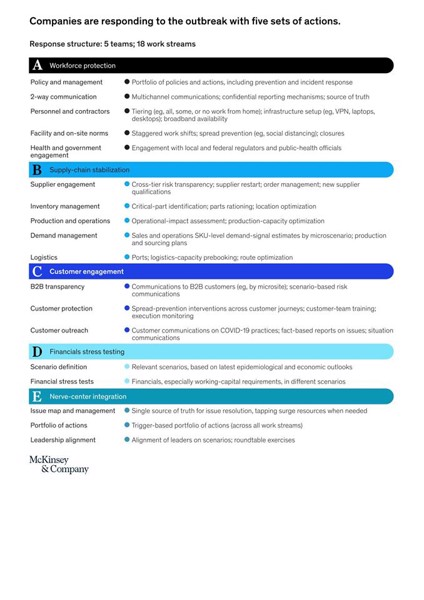

<!DOCTYPE html>
<html lang="en">

<head>
  <meta charset="UTF-8">
  <meta name="viewport" content="width=content-widht, initial-scale=1.0">
  <meta name="description"
    content="Những cuộc trao đổi, đàm thoại với hàng trăm doanh nghiệp trên toàn thế giới đã cho tôi thấy toàn cảnh cách các công ty phản ứng với thách thức từ đại dịch COVID-19.">
  <meta http-equiv="X-UA-Compatible" content="ie=edge">
  <!-- Facebook Content -->
  <meta property="og:title" content="Đương đầu COVID-19: Doanh nghiệp thiếu gì? | neuraltalks.io">
  <meta property="og:image" content="images/thumbnail_post2.png">
  <title>Đương đầu COVID-19: Doanh nghiệp thiếu gì?</title>
  <link rel="icon" href="images/neuraltalks.ico">
  <!-- <link rel="stylesheet" href="/build/vendor.css"> -->
  <link href="https://unpkg.com/tailwindcss@^1.0/dist/tailwind.min.css" rel="stylesheet">
  <script src="https://polyfill.io/v3/polyfill.min.js?features=es6"></script>
  <script id="MathJax-script" async src="https://cdn.jsdelivr.net/npm/mathjax@3/es5/tex-mml-chtml.js"></script>
  <script async src="https://www.googletagmanager.com/gtag/js?id=G-EBPFJRPY24"></script>
  <script>
    window.dataLayer = window.dataLayer || [];
    function gtag() { dataLayer.push(arguments); }
    gtag('js', new Date());

    gtag('config', 'G-EBPFJRPY24');
  </script>
  <style>
    .prose {
      color: #374151;
      max-width: 65ch;
      font-size: 1rem;
      line-height: 1.75;
    }
  </style>
</head>

<body>
  <!-- HEADER -->
  <div class="max-w-3xl mx-auto px-4 sm:px-6 xl:max-w-5xl xl:px-0">
    <header class="flex justify-between items-center py-10">
      <div class="flex items-center">
        <a href="index.html" class="block">
          
        </a>
      </div>
      <div class="text-base leading-5">
        <a href="blog.html" class="font-medium text-gray-700 hover:text-gray-700">Blog</a>
        <a href="index.html" class="font-medium text-gray-500 hover:text-gray-700 pl-4">About</a>
      </div>
    </header>
  </div>
  <!-- ./HEADER -->
  <!-- CONTENT -->
  <div class="max-w-3xl mx-auto px-4 sm:px-6 xl:max-w-5xl xl:px-0">
    <main>
      <article class="xl:divide-y xl:divide-gray-200">
        <header class="pt-6 xl:pb-10">
          <div class="space-y-1 text-center">
            <dl class="space-y-10 mb-4">
              <div>
                <dt class="sr-only">Published on</dt>
                <dd class="text-base leading-6 font-medium text-gray-500">
                  <time>Friday, December 18, 2020</time>
                </dd>
              </div>
            </dl>
            <div
              class="text-3xl leading-9 font-extrabold text-gray-900 tracking-tight sm:text-4xl sm:leading-none md:text-5xl md:leading-none">
              Đương đầu COVID-19: Doanh nghiệp thiếu gì?
            </div>
          </div>
        </header>

        <div class="divide-y xl:divide-y-0 divide-gray-200 xl:grid xl:grid-cols-4 xl:col-gap-6 pb-16 xl:pb-20"
          style="grid-template-rows: auto 1fr;">
          <dl class="pt-6 pb-10 xl:pt-11 xl:border-b xl:border-gray-200">
            <dt class="sr-only">Authors</dt>
            <dd>
              <ul class="flex justify-center xl:block space-x-8 sm:space-x-12 xl:space-x-0 xl:space-y-8">
                <li class="flex items-center space-x-2">
                  
                  <dl class="text-sm font-medium leading-5 whitespace-no-wrap">
                    <dt class="sr-only">Name</dt>
                    <dd class="text-gray-900">Son Nguyen</dd>
                    <dt class="sr-only">Twitter</dt>
                    <dd>
                      <a href="https://twitter.com/jensonng6" target="_blank"
                        class="text-red-500 hover:text-red-600">@jensonng6</a>
                    </dd>
                  </dl>
                </li>
              </ul>
            </dd>
          </dl>
          <div class="divide-y divide-gray-200 xl:pb-0 xl:col-span-3 xl:row-span-2">
            <div class="prose max-w-none pt-10 pb-8">
              <div class="p-4">
                
              </div>
              <p>
                Mặc dù danh sách bên dưới được tổng hợp khá đầy đủ, vẫn có một vài công ty chọn những nước đi khác. Tuy nhiên, bằng chứng cho thấy rằng các công ty vẫn đang gặp khó trong việc hành động một cách đúng đắn và hợp lí. Và dưới đây là 5 thách thức chính:
              </p>

              <h2 class="text-xl font-bold">1. Kiến thức, hiểu biết không đồng nghĩa với khả năng nội hoá/áp dụng thực tế:</h2>

            <p>Ngày càng có nhiều trường hợp gặp vấn đề với việc áp dụng lí thuyết để phản ứng thực tế trừ khi đã trải qua trường hợp tương tự trước đó. Các nhà quản lí, nếu chưa bao giờ trải nghiệm hoặc chỉ trải nghiệm qua mô phỏng, thực sự gặp khó trong việc phản ứng đúng cách. Chẳng hạn, lí thuyết cơ chế chuyển bậc khá dễ hiểu, nhưng áp dụng chúng trong thực tế là một bài toán khó với các doanh nghiệp, đơn giản là thực tế luôn không giống như những gì trong sách hướng dẫn. Những trường hợp gặp ‘khủng hoảng’ thường đến từ các nhà quản lí, mà việc không chọn cơ chế chuyển bậc đã tạo ra những tình huống còn tệ hơn cho doanh nghiệp của họ.

                <h2 class="text-xl font-bold">2. An toàn nhân sự là tối cao, nhưng cơ chế hành động không hiệu quả:</h2>
              <p class="mt-4">
                Hoạch định chính sách tại các công ty thường không dàn trải và không hiệu quả, đặc biệt những nơi chưa được Virus Corona ‘ghé thăm.’ Nhiều doanh nghiệp, về công nghệ và dịch vụ chuyên nghiệp, tỏ ra vô cùng bảo thủ: các cơ chế bảo hộ chỉ đang giúp tăng thêm nhận thức về sự an toàn chứ không thực sự làm mọi người an toàn hơn. Ví dụ, kiểm tra thân nhiệt có thể không phải hình thức sàng lọc hiệu quả nhất, do Virus có thể truyền đi không có triệu chứng. Yêu cầu nhân viên ở nhà nếu họ thấy không khoẻ sẽ giảm thiểu khả năng truyền nhiễm. Những chính sách như vậy sẽ hiệu quả hơn nếu nhân viên nhận được bồi thường - và cách ly khỏi các hậu quả khác nữa.
              </p>
              <p class="mt-4"> Một số công ty không nghĩ đến những tác động ngược khi thực hiện chính sách. Ví dụ, lệnh cấm đi lại mà không có chính sách làm việc tại nhà kèm theo có thể biến văn phòng thành một tụ điểm vô cùng đông đúc với khả năng lây nhiễm thậm chí còn cao hơn. Hoặc áp dụng chính sách chung cho toàn công ty mà không nghĩ đến những nhu cầu đặc thù của các vị trí và bộ phận nhân viên khác nhau.
              </p>
              <div class="container w-100">
                    
                    <p class="italic">Tổng hợp các cách doanh nghiệp phản ứng với đại dịch COVID-19. (Ảnh: McKinsey)</p>
                </div>
              <h2 class="text-xl font-bold">3. Lạc quan về sức cầu là nguy hiểm:</h2>

              <p class="mt-4">
                Lạc quan về sự hồi phục của sức cầu thực sự là một vấn đề, đặc biệt là cho các công ty thiếu vốn lưu động hoặc thanh khoản, và đứng trước nguy cơ phá sản. Các công ty khi gặp vấn đề có xu hướng đặt niềm tin vào một sự phục hồi nhanh chóng - hoặc xuống dốc ít hơn. Đối diện với khả năng suy thoái kéo dài là cần thiết, do các phương án sớm ở hiện tại, trước khi suy thoái ‘đổ bộ,' có thể đem lại hiệu quả hơn là những phương án sau này. Lấy ví dụ, việc thoái vốn để nhận số tiền mặt cần thiết có thể được hoàn thành với mức giá cao hơn hôm nay so với vài tuần hay vài tháng sau.              </p>
                <h2 class="text-xl font-bold">4. Giả định trên doanh nghiệp đi sai hướng:</h2>

                <p class="mt-4">
                    Một số công ty đang phản ứng với Virus Corona dựa trên các bộ phận/silo khác nhau trong tổ chức (ví dụ như nhóm thu mua chịu trách nhiệm về cung-cầu, nhóm marketing và bán hàng phụ trách liên hệ khách hàng). Nhưng rõ ràng mỗi đội ngũ có những giả định khác nhau và từ đó có những chiến thuật riêng biệt, đào sâu vào đặc thù phòng ban hơn là nghĩ về hướng đi của các bộ phận khác - hoặc những gì có thể tiếp diễn.</p>
                    <h2 class="text-xl font-bold">5. Ngắn hạn quan trọng, nhưng đừng quên dài hạn (vì những hậu quả nhãn tiền):</h2>
             <p class="mt-4">
                Phản ứng nhanh và hiệu quả tất nhiên là quan trọng. Chúng ta nghĩ các công ty đã và đang theo đuổi các cách phản ứng phù hợp, như trong Phụ lục 4. Nhưng với các luồng công việc, tác động dài hạn mới là thứ yếu. Suy thoái có thể xảy ra. Gián đoạn do đợt bùng dịch này đang thay đổi cơ cấu thị trường. Thị trường tín dụng có thể tăng trưởng, dù không có yếu tố kích thích. Khả năng phục hồi chuỗi cung-ứng sẽ ở mức cao. Nghe có vẻ vô lí với những đội ngũ quản lí đã làm việc 18 tiếng một ngày, nhưng có quá ít đang dành đủ thời gian và công sức cho những phản ứng có tác động về lâu dài.              </p>
              <p class="mt-4">
                ---
              </p>
              <p>
                Bài viết được dịch từ McKinsey & Company, COVID-19: Implications for business – Briefing note, ngày 16 tháng 3, 2020. Xem đầy đủ bài viết gốc tại: https://www.mckinsey.com/business-functions/risk/our-insights/covid-19-implications-for-business              </p>
                <p class="mt-4">
                    ---
             </p>
            <p>
                Thông tin chi tiết: https://seedplanter.org
              </p>
            </div>
          </div>
        </div>
      </article>
    </main>
  </div>
  <!-- ./CONTENT -->
</body>

</html>
